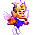

なつやすみじゆうけんきゅう
☆☆ Ａ−ＬＩＦＥであそぼう！ ☆☆
《 第２回 》
あ〜なんだかもうすっかり夏だなあ。
みーん、みーん、み〜ん....じじじじじ。
みなさん、いかがお過ごしでしょうか。この講座も、最終回がやってきました。
つめたい麦茶など飲みながら、それじゃあいってみましょうか。

Ａ−ＬＩＦＥの数を増やしたい！（難易度Ｃ）
1. ピアンを増やしたい
数打ちゃ当たるっていうしね。
【こうすればＯＫ！】
|
最大の敵、メアンは必ず倒しておく ピアンが卵を産んだらすぐに孵してあげる |
ピアンは基本的に弱い立場です。腹を空かせたメアンに出会えばたちどころに食べられてしまいます。
また、メピアンも要注意です。交配好きの彼らはピアンともむりやり交配しようとします。
交配は非常にＨＰを消費するため、寿命が極端に短くなってしまうのです。
2. メピアンを増やしたい
ここがうまくいけば、もう、もらったも同然。
【こうすればＯＫ！】
|
メアンをタッチダッシュで弾き飛ばし、 ピアンやメピアンに当てる 卵を産んだらすぐに孵してあげる |
メピアンの繁殖力は非常に優れているため、ある程度の数になってしまえば勝手に増えてくれます。
ただし、そのために同じ様なメピアンしか誕生しない可能性も高いのです。
もし数だけでなく種類も増やしたいと思うのであれば、ピアンをある程度確保しておくことが必要です。
●ピアンがいなくなってしまったら…
やばいね。かなり奥の手です。
【こうすればＯＫ！】
|
メピアンを倒しまくって絶滅させよう |
ピアンが絶滅してしまうと、Ａ−ＬＩＦＥの変化が非常に乏しくなってしまいます。
にっちもさっちもいかず、かといって新規のデータから始めるのはなあという人には最後の手段です。
ただし、これを実行した場合スーパーピアンが建設した「ピアンタワー」も消滅してしまいます。
良いことはないので、ピアンは大切にしましょう！

スーパーピアンを誕生させたい！（「ピアンタワー」を見たい）！（難易度Ａ）
こ、これは....
最終段階、究極のおたのしみ！！
【こうすればＯＫ！】
|
違う種類のメピアンを積極的に作ろう メピアンを一ヶ所に集めよう スーパーピアンを絶対に倒さない |
メピアンとメピアンの交配の結果ピアンのみのパーツが遺伝された場合にスーパーピアンが誕生します。
そこでメピアンを追いかけたりして一ヶ所に集め、積極的に交配させましょう。
ピアンのパーツを沢山持ったメピアン同士が交配するとスーパーピアンの生まれる確率が高くなります。
スーパーピアンが寿命以外でいなくなる条件はただひとつ、パラループに吸われてしまうときです。
慎重を期すためにも、スーパーピアンの近くでのパラループは控えた方がよいでしょう。
 最新情報に戻る
最新情報に戻る What's Newに戻る
What's Newに戻る
1996/9/1